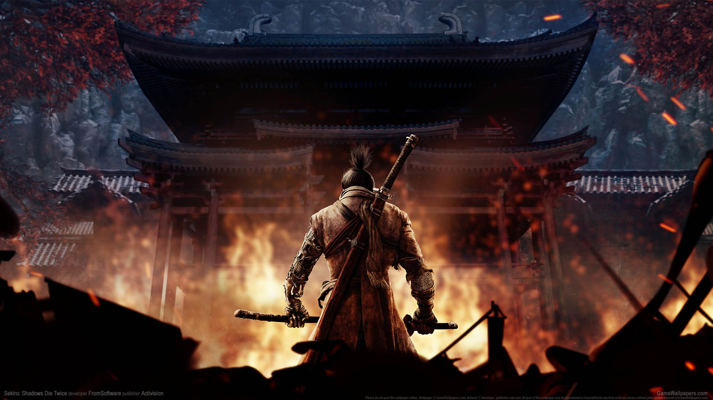
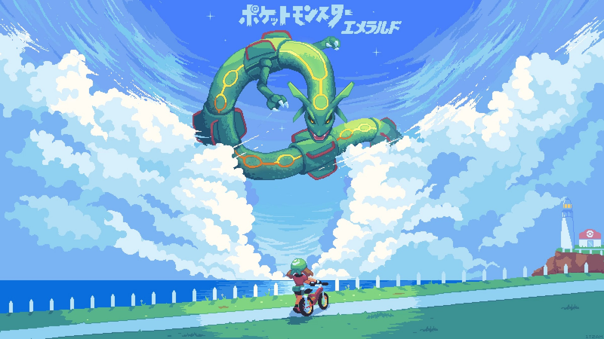
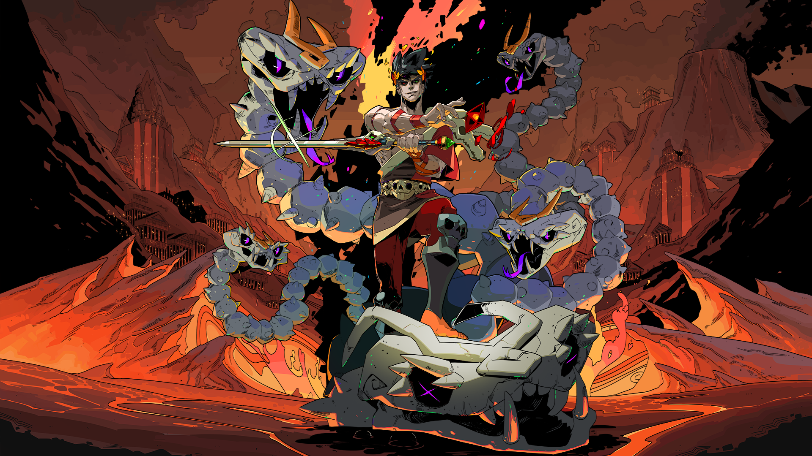
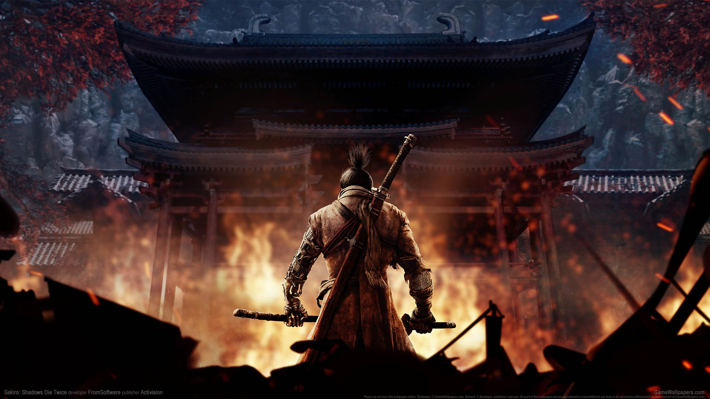
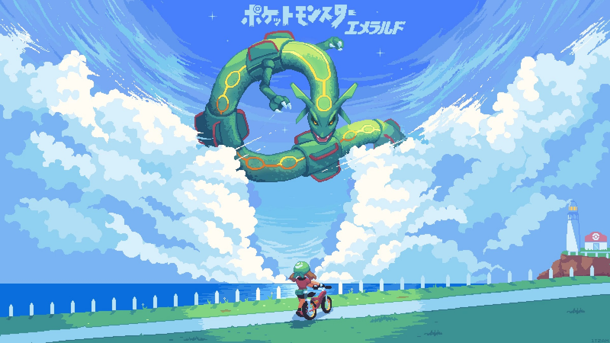
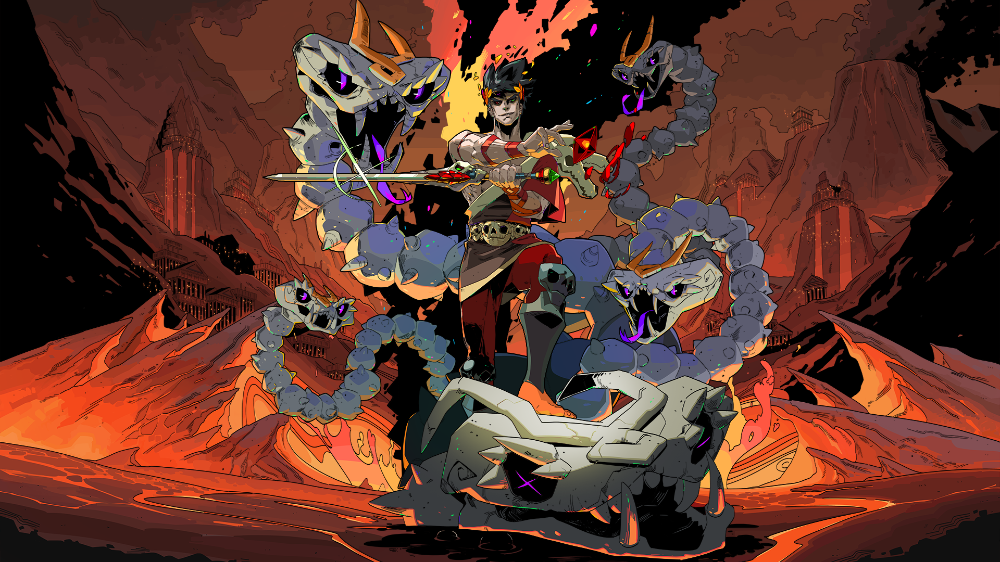

Dark Souls
Dark Souls se passa primariamente no reino fictício de Lordran, onde os jogadores assumem o papel de um personagem denominado "Chosen Undead" que, segundo lendas, seria responsável pela quebra de uma maldição que torna incapazes de morrer aqueles que são afligidos por uma misteriosa marca negra.
Dark Souls II
A história acontece na sombria Drangleic, uma terra devastada cheia de segredos e perigos mortais, onde humanos, dragões e gigantes lutaram por eras, em um ciclo que parece não ter fim.
Dark Souls III
O mundo de Dark Souls III se passa em um universo medieval de fantasia onde o fogo, que uma vez trouxe vida e luz ao mundo, está se apagando. Este fogo, chamado de First Flame, é a força primordial que mantém o equilíbrio entre a vida e a morte, a luz e a escuridão.
Elden Ring
O universo de Elden Ring gira em torno do Anel Prístino, uma entidade mística que governa a ordem do mundo e confere poder aos deuses e governantes das Terras Intermédias. O Erdtree, uma gigantesca árvore luminosa, representa a força do Elden Ring, e é a fonte do poder divino que sustenta a ordem do mundo.
Sekiro: Shadows Die Twice
Sekiro: Shadows Die Twice é um jogo de ação e aventura intenso em terceira pessoa que se passa no Japão do século XVI. Entre na pele de um guerreiro que caiu em desgraça e voltou da morte, cuja missão é salvar seu mestre e se vingar do seu arqui-inimigo
Pokemon Emerald
Proteja a região de Hoenn das misteriosas forças do solo e água, Groudon e Kyogre, que ameaçam assumir o seu controle. Felizmente, o poder de Rayquaza - o céu - pode te ajudar.
Hades
Um filho adolescente (Zagreu, deus do sangue e príncipe do Submundo) tenta fugir de casa para se libertar de um pai emocionalmente frio e distante (Hades, deus dos mortos e governante do submundo).